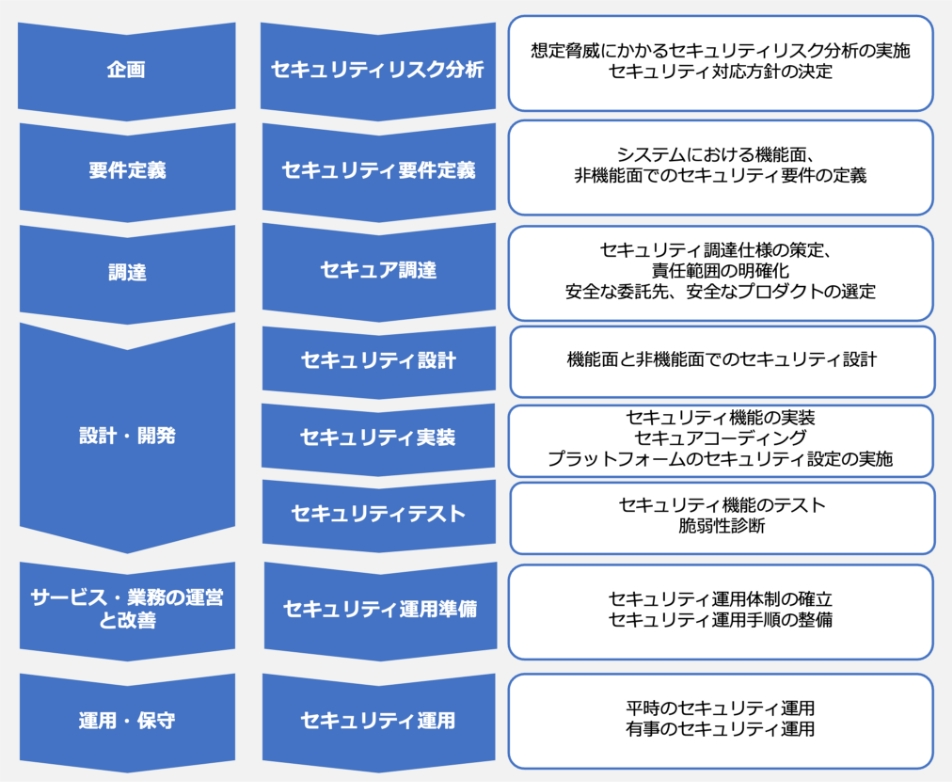

17-2-1. Security by Design
関連する主な管理策
5.1、5.7、5.9、5.19、5.20、5.24、5.26~5.29、5.37、8.9、8.15、8.16、8.22、8.25~8.34
Security by Designとは「情報セキュリティを企画、設計段階から組み込むための方策」で、開発プロセスの早い段階からセキュリティを考慮することで、開発システムのセキュリティを確保するという考え方です。従来のように、後づけでセキュリティ機能を追加したり、システムの導入直前に脆弱性診断などを実行したりする方法の場合、手戻りが多発することがあり、結果的に開発コストが増大する可能性があります。設計・企画段階からセキュリティ対策を行うことで、手戻りが少なくなり、コストの削減につながり、保守性のよいシステム・ソフトウェアになります。
図58. セキュリティ対策の実施タイミング
Security by Design導入のメリット
- 手戻りが少なくなり、納期を守れる
- コストを削減できる
- 保守性の高いソフトウェアができる
Security by Designの工程ごとに実施内容を紹介します。また、実施手順を策定する上で、選択すべき管理策の例を紹介します。
実施手順（例）
選択すべき管理策（例）
セキュリティリスク分析
- システムで取扱う重要情報、アクター、実施業務、他システムとの連携方法など、システムで取扱う重要情報のフローやライフサイクルが分かる内容を記載したシステムプロファイルの作成
- システムプロファイルに基づくセキュリティ脅威の特定
- セキュリティ脅威の発生可能性、システムへの影響度を踏まえたリスク分析の実施
- リスク分析結果を踏まえたセキュリティ対応方針の決定（リスク対応優先度、遵守すべきセキュリティ標準、検証方法、対応リソースなど）
- 5.1 情報セキュリティのための方針群
- 5.9 情報及びその他の関連資産の目録
セキュリティ要件定義
遵守すべきセキュリティ標準（セキュリティベースライン）や、詳細リスク分析結果などに基づいた、システムとして満たすべきセキュリティ要件の定義（機能、機能面）
8.26 アプリケーションのセキュリティの要求事項
セキュア調達
- セキュリティ要件に基づき、調達仕様書のセキュリティ仕様策定
- セキュリティ仕様に関する、委託先との責任範囲の明確化
- 委託先に求めるセキュリティ管理基準の策定
- セキュリティ仕様を満たす能力を有した安全な委託先の選定
- 不正侵入の経路となるバックドアなどが含まれていない、サポートを受けられる安全なプロダクトの選定
- 5.19 供給者関係における情報セキュリティ
- 5.20 供給者との合意における情報セキュリティの取扱い
セキュリティ設計
-
セキュリティ設計の実施
- アプリケーションセキュリティ
- OSセキュリティ
- ミドルウェアセキュリティ
- ネットワークセキュリティ
- クラウドセキュリティ
- 物理セキュリティ
- セキュリティ運用（平時、有事）
8.27 セキュリティに配慮したシステムアーキテクチャ及びシステム構築の原則
セキュリティ実装
- 設計に基づくシステムにおけるセキュリティ機能の実装
- セキュリティ設計に基づくアプリケーションのセキュアコーディング
-
セキュリティ設計に基づくプラットフォームのセキュリティ設定の実施
- OS セキュリティ
- ミドルウェアセキュリティ
- ネットワークセキュリティ
- クラウドセキュリティ
- 物理セキュリティ
8.28 セキュリティに配慮したコーディング
セキュリティテスト
-
セキュリティ機能テストの実施
- 単体テスト
- 結合テスト
- システムテストなど
-
脆弱性診断の実施
- Webアプリケーション脆弱性診断
- プラットフォーム脆弱性診断
- スマートフォンアプリケーション診断
- 高度セキュリティ診断（ペネトレーションテストなど）
- 機能テストで検出されたバグの是正対応
- 脆弱性診断で検出された脆弱性に対するリスクベースの是正対応
- 8.29 開発及び受入れにおけるセキュリティ試験
- 8.33 試験情報
- 8.34 監査試験中の情報システムの保護
セキュリティ運用準備
- セキュリティ運用体制の確立
-
下記項目に対応したセキュリティ運用手順の整備
-
平時の運用
- 構成管理、変更管理
- セキュリティ製品のアラート、システムログなどを活用したセキュリティ監視、検知
- 脅威情報収集、自システムへの影響分析
- CVSSなどに基づくリスクに応じた脆弱性対応
- 定期的な脆弱性診断の実施
-
有事の運用
- インシデント対応
-
平時の運用
- 有事を想定したセキュリティ運用訓練の実施
- 5.24 情報セキュリティインシデント管理の計画及び準備
- 5.29 事業の中断・阻害時の情報セキュリティ
- 8.9 構成管理
- 8.32 変更管理
- 8.19 運用システムに関わるソフトウェアの導入
セキュリティ運用
-
セキュリティ運用の実施
-
平時の運用
- 構成管理、変更管理
- セキュリティ製品のアラート、システムログなどを活用したセキュリティ監視、検知
- 脅威情報収集、自システムへの影響分析
- CVSSなどに基づくリスクに応じた脆弱性対応
- 定期的な脆弱性診断の実施
-
有事の運用
- インシデント対応
-
平時の運用
- 5.7 脅威インテリジェンス
- 5.26 情報セキュリティインシデントへの対応
- 5.29 事業の中断・阻害時の情報セキュリティ
- 5.37 操作手順書
- 8.9 構成管理
- 8.15 ログ取得
- 8.16 監視活動
- 8.32 変更管理
詳細理解のため参考となる文献（参考文献）